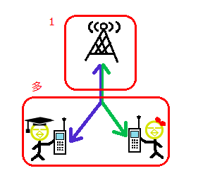
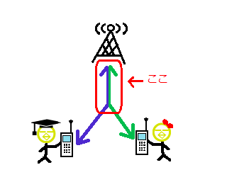
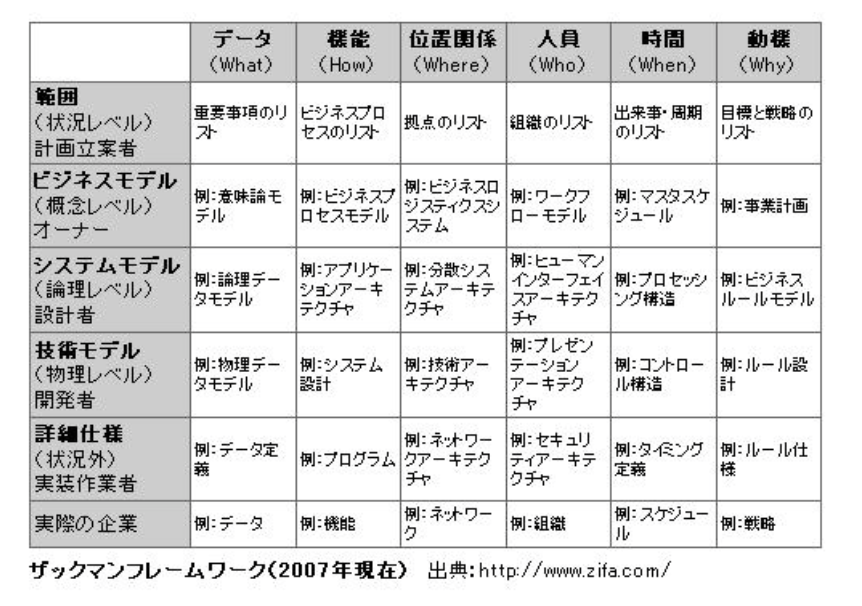

シン･プロビジョニング（Thin Provisioning）とは、アプリケーションやサーバーに割り当てられているストレージを、実際に割り当てられている物理ストレージのディスク容量よりも、多くの領域を使えるように見せる技術です。
従来、ストレージの容量設計は、データ量の増加を見込んで行っていたため、必要以上のストレージ容量を確保していました。また、近年、ビジネスの現場において、取り扱われるデータ量は増加しています。これに伴い、データ量に応じた的確なディスク容量の予測が難しくなり、確保する容量も増加傾向にあります。そのため、ストレージの容量設計は電力費用、設置面積などのコスト面から重要な課題となってきました。
この問題を解決するための技術がシン・プロビジョニングです。
○ストレージの使用効率を上げることができる
… 最小限の物理ディスクを割り当てるだけで運用を開始できる
○新しい論理ディスクが必要になった際に、ストレージの追加購入をする必要がない
… 空き容量を効率的に使用し、新しい論理ディスクを作成することができる
○消費電力、冷却費用、設置面積などの運用コストを削減できる
… 装置や機器を集中して管理できる
○ストレージのキャパシティプランニングが容易になる
… 実際に割り当てられる物理ディスク容量を意識せずに、大容量の論理ディスクを作成できる
株式公開買付け（かぶしきこうかいかいつけ）とは、ある株式会社の株式等の買付けを、「買付け期間・買取り株数・価格」を公告し、不特定多数の株主から株式市場外で株式等を買い集める制度のことである。日本においてはTOB（take-over bid）と言うことが多い。 第三者が、企業買収や子会社化など、対象企業の経営権の取得を目的に実施することが多い。他には市場に流通する「自社の株式」（自己株式）を購入するために使われることもある
デューディリジェンス（Due diligence)とは、ある行為者の行為結果責任をその行為者が法的に負うべきか負うべきでないかを決定する際に、その行為者がその行為に先んじて払ってしかるべき正当な注意義務及び努力のことで、転じて投資やM and Aなどの取引に際して行われる、対象企業や不動産・金融商品などの資産の調査活動である。
サンクコストとは、既に回収が不可能であるコストを意味します。 サンクコストは英語で「Sunk Cost」と言います。Sunkとは沈むという意味であり、沈んでしまって取り返すことのできない状態であることを示しています。ですので、サンクコストは「埋没コスト」と呼ぶこともあります。 サンクコストの「コスト」は日本語の費用に当たります。お金の費用や、労力などの人的コストです。 サンクコストは、わかりやすい言葉で言うと、「どうやっでも取り返すことのできないコスト」となります。すでに支払ってしまった費用、取り返すことのできない過去の時間はサンクコストの対象です。
時分割多元接続（じぶんかつたげんせつぞく : Time Division Multiple Access）は、同一周波数の電波の固定タイムスロットをそれぞれの無線局に割り当て、多元接続を行う無線通信技術である。
「時分割多元接続」って単語が出てきたら「同じ電波を使った多対1の接続において、時間のズレ（並び順）で情報を区別するやり方なんだな～」と、お考えください。


エンタープライズ・アーキテクチャ（EA）を考えるためのフレームワークで、組織（enterprise）という複雑な構造物を体系的に記述・観測できるように、各要素の範囲や関係を分類・整理したもの。
ザックマンフレームワークは、企業階層（関与者）の観点を縦軸、5W1Hの観点を横軸に取った6行6列※のマトリクスで表現される。
